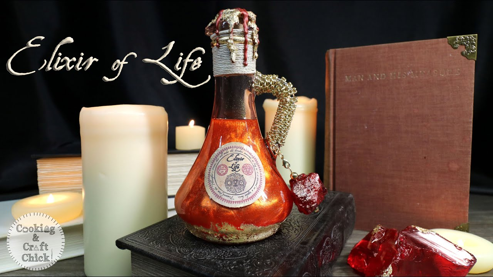

Elixir of Life

Are you dead? If you are a skeleton, then does your skull rattle with the anger of revenge? As a corpse, do you wake up often from your eternal slumber in your coffin longing for your king sized bed? As a zombie, are you bored of eating brains and desire to taste human food again? With this potion you can come back to life again and ensure that your life partner doesn't remarry with your insurance money.
Ingredients:
- Golden Crucible
- Cold Fire
- Philosopher's Stone
- Ocean's Tears
- Earth Crystal
- Sun's Shadow
- Item with Divine Power
- Magic Wand
Steps:
- Add Ocean's Tears to the crucible.
- Burn the cold fire under crucible.
- Scrape Philosopher's Stone such that powder falls and the remaining Stone looks like a small version of original stone.
- Add the powder scraped in previous step to crucible.
- Add Earth Crystal and Sun's Shadow together in crucible.
- In the crucible, add the item with Divine Power.
- Wave the wand 9 times in clockwise direction above crucible.
- Wait 17 seconds, then pray that the divine punishment descending anytime now will not destroy the potion along with you.
If you and your potion survives, then congratulations! Now just beware of the No-Nosed One and the Crooked-Nosed One.